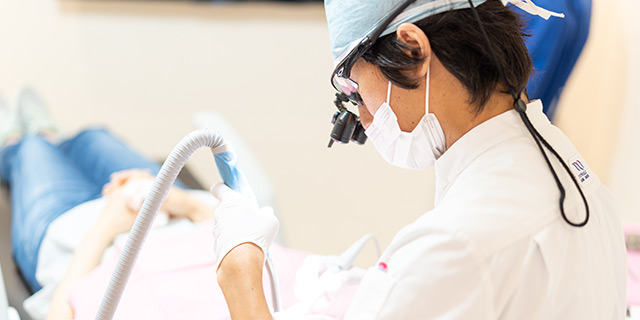
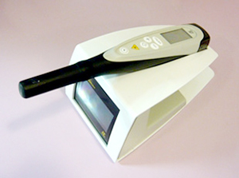
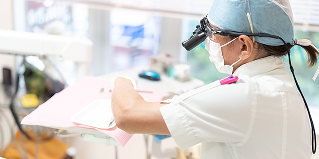
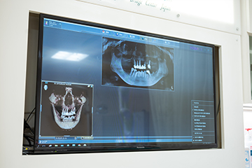
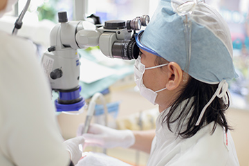
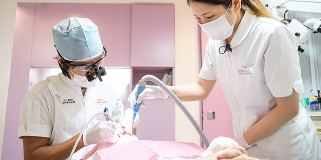
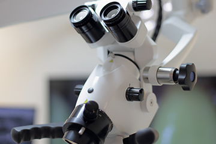

079-562-8471
079-562-8471- Home
- 虫歯治療・根管治療・白い詰め物外来
虫歯は早期発見・早期治療が大切ですWhite
虫歯は身近なお口のトラブルで、「歯が痛い」「冷たい物がしみる」などの症状で気づくことがほとんどです。しかし虫歯の初期段階は自覚症状があらわれにくいので、気づいたときにはすでにかなり進行しています。

そのまま放置すると健康な歯質がどんどん損なわれますので、できるだけ早く治療しましょう。異変に気づいたら、お早めに兵庫県神戸市三宮の歯医者「北野坂鳥居歯科医院」にご相談ください。こちらでは重度の虫歯の「根管（こんかん）治療」や歯を削る量をかなり抑えられる「白い詰め物外来」もご案内します。
虫歯治療
虫歯は、自覚症状があらわれたときにはすでにかなり悪化していて、放っておくとさらに進行し、健康な歯質が汚染され失われていきますので、できるだけ早く治療することが大切です。早期発見・早期治療ができれば、比較的かんたんな治療で済みますので、お早めにご相談ください。
〜当院での虫歯治療の特徴〜

自覚症状があらわれていない初期段階の虫歯も見逃さないように、虫歯診断器「ダイアグノデントペン」を活用します。ペン状の機器の先を歯に触れるだけで、虫歯を数値で判定します。痛みなどをともないませんので、お子さんにも安心です。
通常の虫歯治療では虫歯に汚染された部分を削り取り、詰め物などで補います。当院ではほかにも虫歯を削らずにミネラルで殺菌する「ドックスベストセメント」も扱っていますので、お気軽にご相談ください。
根管治療
虫歯の悪化が進むと、歯の表面のエナメル質から内側の象牙質、そしてその内側にある歯の神経にまで汚染が進んでいきます。すると何もしなくてもかなりズキズキ痛み、そのまま放っておくと抜歯しなければならなくなります。できるだけ抜歯を避け、歯を残すために行うのが歯の神経の治療「根管治療」です。

根管とは歯の神経が入っている複雑な形状をした細い管で、その中の虫歯菌に汚染された神経や血管、汚染歯質を除去して洗浄・消毒し、歯の根の先まですき間なく薬剤で充填して密閉するのが根管治療です。根管治療は細かい部位の細かい処置の連続で、少しでも細菌を残してしまうと再発してしまうので精密さが要求されます。
当院での根管治療の特徴
従来の保険治療では、根管内をきれいに清掃することが困難であり、再感染する可能性が高く、そのたびに被せ物を破壊し、根管治療を繰り返すことが問題として挙げられてきました。
精度の高い根管治療をご提供するために、歯科用CTを活用し、見えない部分を可視化したうえでマイクロスコープを活用して実際に治療部位を拡大視します。また治療中に唾液などを介して細菌が入らないようにラバーダムやzoo(吸引、防湿器具)を使用し、衛生管理を徹底し滅菌処理した器具を使って治療します。


さらに、適度な柔軟性があるニッケルチタンファイルを活用し、電動モーターや低速コントラハンドピースを用いて根管を傷めないような処置をご提供するのです。薬剤の根管充填の際にもオブチュレーションシステムを用いて封鎖性を高め、精密な治療を可能にしています。
白い詰め物外来

虫歯治療で歯を削ったあと、白い詰め物で失った歯質を補うことがあります。レジン（歯科用プラスチック）を使うと、歯質を削る量を抑えられるうえ、歯の色に似た色調なので自然に見えるうえ、削ったその日に治療が終わります。健康な歯質をできるだけ残し、ほとんど痛みをともなわない虫歯治療です。当院では、保険診療とは異なる処置でレジンを使った「白い詰め物外来」をご提供します。
「白い詰め物外来」での治療の特徴

虫歯に汚染されている部分だけをマイクロスコープ（歯科用顕微鏡）を使って拡大視しながら除去します。健康な歯質を削ると痛みますので、細菌が存在しない部分はほぼ削りません。つまりほとんど痛みをともなわないのです。あらかじめ麻酔をする際にも注射方法に工夫してできるだけ痛くないようにご提供します。
そして接着力を引き出す方法を用いて、段差やすき間がほとんどない形状に整え、まわりの歯との色調に合わせて自然な見た目に仕上げます。ツヤがあり着色しづらいので白く美しい状態が長もちする治療です。
自費診療の白い詰め物のメリット・デメリット
【メリット】
- 天然歯に近い美しさ
- 時間が経っても変色しにくい
- 精密治療なので再発リスクを低く抑えられる
- 即日治療が可能
- ほとんど痛くない
- 患部以外の健康な歯質をほとんど削らない
- 保証期間10年
【デメリット】
- 費用が比較的高い
こんな方におすすめ
- 虫歯を削った穴の修復
- 着色・劣化したレジンの詰め物の見た目と機能の改善
- 保険診療のメタルインレー（金属の詰め物）の見た目と機能の改善
- 破損した歯の見た目の回復
治療費のご案内
白い詰め物博士 保坂啓一先生監修
1本 100,000円（税別価格）
そのほかの治療を専門に行う歯科医師
1本 75,000円（場合によっては、50,000円または35,000円）（すべて税別価格）
 WEB予約
WEB予約